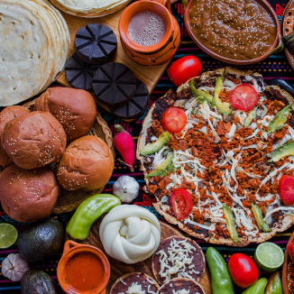
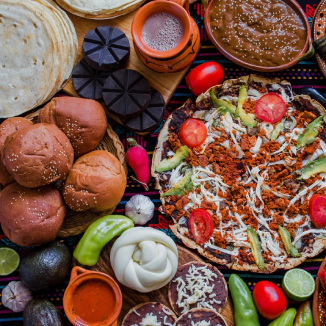
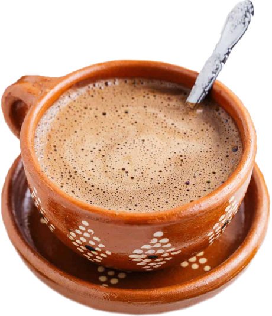
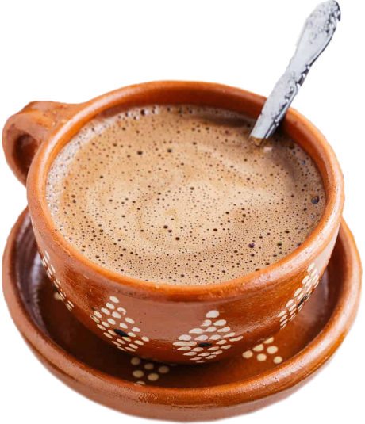
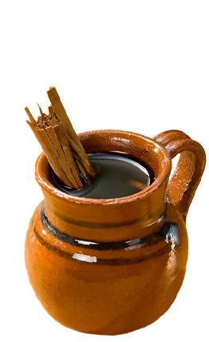
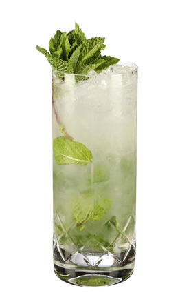
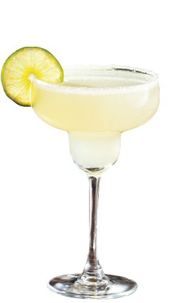
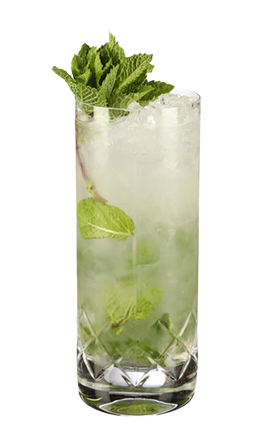
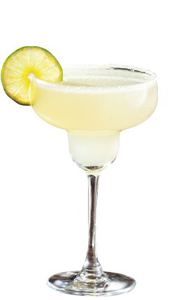

The Sasa Lele restaurant offers an interactive experience that allows you to discover the history of Mexican culture through its gastronomy and traditional dishes made by your own hands.
buttonsReservations
introduction 


This weeks menu is based on "el dia de muertos". A Mexican holiday where families welcome back the souls of their deceased relatives for a brief reunion that includes food, drink and celebration.

 
our selection of drinks

our selection of drinks
To accompany your meals we have a large selection of traditional mexican drinks. With every drink you order, comes a short introduction to the drinks origin.


 





5.50 $
5.50 $
3.50 $
8.50 $
8.50 $
8.50 $
8.50 $
8.50 $
A hot coffee spiced with cinnamon and piloncillo.
An iced tea made with dried hibiscus flowers, water and sugar.
An iced drink made of rice water blended with cinnamon sticks.
A cocktail beer, consisting of clamato juice and spices.
A cocktail consisting of rum or tequila, lime, mint and sugar.
A cocktail consisting of tequila, triple sec, and lime juice, served with salt on the rim of the glass.
A cocktail consisting of tequila, lime juice, and grapefruit soda.
A hot or cold coffe drink spiked with rum or other sweet and strong liquors.
reservation footer
916 W Fulton Market
Chicago, IL 60607, USA
Mo-Su 10:30-14:30am
18:30-22:30pm
+41 000 00 00
@SasaLele@gmail.com